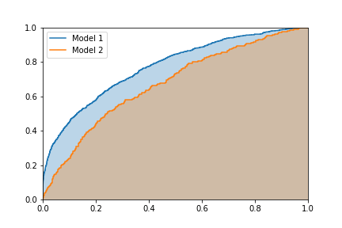

Classification: Hard vs Soft Predictions
We usually think of a classifier as being a model that takes in a set of features, and predicts a single class for that object. For example, an image classifier may process a picture and classify it as a "cat" or a "dog". These predictions are called hard predictions, insofar as we only get the predicted class with no indication of the "confidence" that the model has in its prediction. A soft prediction is when we assign each category a score, with a higher score meaning we have more confidence in that answer. One natural score to use is the "probability" that an image belongs to a certain category. For an example of the difference, an image classifier might classify the image on the left as a cat (hard prediction) but only give it a low score (soft prediction) as it isn't entirely sure it isn't a croissant.
With a soft prediction, one way to generate a hard prediction is to guess the class with the highest score. If your model is well-trained, this approach does a good job of maximizing accuracy. If the costs of misclassication are drastically different for the different classes, predicting accuracy might not be the right thing to measure. For example, a classifier for testing if food is still good might make the following predictions about the milk in my fridge:
| Class | Fine | Taste Funny | Nautious | Food poising | Kills me |
|---|---|---|---|---|---|
| Score / probability | 70% | 15% | 7% | 5% | 3% |
I'd want the "food classifier" to predict Kills me, not because it is the most likely outcome, but because the chance is high enough that I would want to know (especially since the consequence of it being wrong is that I have to spend a little more on milk than I otherwise would have).
The process of taking a soft prediction and turning it into a hard prediction is known as "thresholding". For non-trivial problems, where the right answer isn't just "take the category with the biggest score", thresholding the soft predictions into hard ones is an important part of the problem. This doesn't mean that you can just use the hard predict method of your model - all that does is force your software to make the thresholding decision for you!
The special case of binary classifiers
Binary classifiers are usually phrased in terms of trying to detect a positive class. For such classifiers, we only need one score, with a higher score meaning we are more confident that our example belongs to the positive class. For example:
- A "cat classifier" gives a score to images, with higher scores corresponding to more confidence the image is a cat,
- An airport "metal detector" uses magnets to assign a score (induced current) to objects that pass through it, with higher score meaning more confidence or amount of metal detected,
- A "movie recommender" uses features of a film and assigns a score to determine if you would like it,
- A "cancer detector" reads in measurements from a patient and returns a score, with a higher score meaning more likely to have cancer.
For the cat classifier, we could imagine that the output is a "probability" the model assigns to the image being a cat. For an airport metal detector, the "score" is usually the amount of current induced in the detector, but the "hard prediction" of making the alarm go off only occurs once that current crosses a threshold. This is a nice example because a metal detector doesn't give the probability that metal is present or not (that is actually very high - even if you remove all jewelry you probably still have metal shoelace eyelets on your shoes), but instead tries to detect if you have too much metal on you. How much is too much? Well, that depends entirely on how the machine's threshold is set up. When setting it, security staff are balancing letting people through with weapons that we hope to detect against having to spend time searching every person with even a tiny amount of metal on them. There isn't really a nice translation from the current score to a "probability" person has metal on them (which as mentioned above, is cloes to 1).
A movie recommender might predict what it thinks your star rating of a movie might be (a score). I can decide that I am only interested in movies that are predicted to be a 7/10 or above for me. It isn't that a 7/10 movie means there is a 70% chance I like it, while an 8/10 has an 80% chance I like it. If the predictions were perfect, it means that I would like both movies, but I would like the 8/10 movie more. If the predicitons are not perfect (i.e. any real classifier) I might or might not like either movie, but chances are that I am more likely to like the (predicted) 8/10 movie than the (predicted) 7/10 movie.
So we have seen some examples of scores that are not probabilities. Our basic criteria for scores are the following:
- The higher the model scores an example, the more confident it is that the example is in the "positive class",
- A good model will tend to give higher scores to objects in the positive class,
- A perfect model will give all examples in the positive class higher scores than any example not in the positive class.
This last bullet point means that for a perfect model, there is a threshold score so that all positive class examples haves scores greater than the threshold, and all negative class examples have scores lower than the threshold. The ROC curve (and the area under the curve) tells us how well the model's score does at separating the two classes. We eventually need to make a threshold, so we can decide whether to act or not, but the ROC curve allows us to select a model that does a good job distinguishing between the two cases, and once we have settled on a model we can separately determine the appropriate threshold for our problem.
The ROC and Area Under The Curve
Credit score example
Let's consider the example of people that have a model that assigns a credit score to 9 people. The goal of the credit score is assess how likely people are to pay back the loan, but the model isn't perfect. Here are the scores and the payback status:
| Score | 610 | 630 | 650 | 680 | 720 | 760 | 780 | 810 | 845 |
|---|---|---|---|---|---|---|---|---|---|
| Payback? | N | Y | N | Y | N | N | Y | Y | Y |
Until we decide on a threshold, we don't know which people are accepted or rejected for loans. Once we decide on a threshold, here are two things we might be interested in:
-
True positive rate: (also called recall) These are the fraction of the positive class we accept, i.e. the fraction of people that would payback the loan that we accept. Ideally we want to accept 100% of the people that would pay the loan back.
-
True negative rate: (the "mistake rate") These are the fraction of the negative class we accept, i.e. the fraction of people that would default that we accept. Ideally we want this to accept 0% of the people that would default.
We get the ROC curve by calculating the TPR and NPR for every possible threshold. Let's look at a couple of examples:
- If the threshold is 700, we accept three applicants (scores 780, 810, 745) out of the five that would pay us back, so the TPR is 3/5. We also accept two applicants (scores 720, 760) out of the 4 that default, so the FPR is 2/4.
- If the threshold is 600, we accept everyone. In particular we accept all the people that would pay us back, so the TPR is 5/5. We also accept everyone that defaults, so the FPR is 4/4.
These two points get plotted, with the TPR on the horizontal axis, and the FPR on the vertical axis. The entire curve is generated by considering all the different thresholds for the model. You can see an interactive demonstration of setting the threshold and calculating the TPR and FPR below. The collection of all points makes the ROC curve. (You can also try using the full page version.)
| Accepted | Total | Positive rate | ||
|---|---|---|---|---|
| Pay back | (TPR) | |||
| Default | (FPR) | |||
| Total |
| Measurement | Fraction | Value |
|---|---|---|
| True positive rate | ||
| False positive rate | ||
| Precision | ||
| Recall |
Model choice
You can also change the model, as different models assign the same people different scores.
Comparing curves
Comments on this article, particularly figure 3.
More Comparing Curves: Area Under the Curve (AUC)
The ROC tells us how the model performs with all possible different thresholds. When comparing models (in particular, when doing an automated search such as cross-validation) it helps to have one number to compare. For the ROC curve, this number is the area under the curve.

We know the closer the curve gets to the upper-left hand corner, the better the model is. The area under the curve captures this pretty well -- as we cross over and accept a single new point we either increase the TPR or the FPR, so the curve is actually a series of horizontal and vertical lines. The curve can only ever move up or to the right as we accept more people. Intuitively, the greater the area, the better a job the model's scoring does at separating the two classes.
The area under the curve also has another interpretation (not proven here):
The area under the AUC curve is the probability that a randomly chosen example in the positive class has a higher score than a randomly chosen example in the negative class.
The perfect classifier has an AUC of 1.0 (i.e. all positive examples have higher scores than any negative examples), while a classifier that assigns random scores has an AUC of 0.5. Note that the AUC score is not skewed by class imbalance as we pick one example from the positive class (at random) and one from the negative class (at random).
Generating ROC curves in sklearn
To generate a ROC curve in sklearn, we can use the following code:
from sklearn.metrics import roc_curve
import matplotlib.pyplot as plt
scores = [610, 630, 650, 680, 720, 760, 780, 810, 845]
payback = [0, 1, 0, 1, 0, 0, 1, 1, 1]
fpr, tpr, threshold = roc_curve(scores, payback)
plt.plot(fpr, tpr)
plt.show()
The array threshold tells you the threshold used to evaluate each point, so once you know where on the curve you want to operate, you can look up which threshold you want. In this example we used the manually assigned scores, but it is common to use the probability that a model is assigned to the positive class as a score with scores = model.predict_proba(X)[:, 1].
Summary
- A hard classification is a prediction of a single class, while a soft classification assigns each example a score.
- A higher score means that we are more confident that the example belongs to the positive class.
- Scores can be the probability the model assigns to the positive class, or they can be a "score" such as a movie rating or a credit score.
- If we have a soft prediction, to decide how to respond to a model we need to threshold the score (e.g. if the score is higher than X, approve the loan, otherwise deny it).
- The ROC curve evaluates the rate we find the positive cases (true positive rate) and the rate we accidentally classify the negative cases as positive (the false positive rate) for each possible threshold. These are defined as
$$ \text{tpr} = \text{(positive cases correctly identified)} / \text{(number of positive cases)} = \text{recall} $$and$$ \text{fpr} = \text{(negative cases identified as positive}) / \text{(number of negative cases)}$$
- The area of the curve (AUC) is a number from 0 to 1, that tells us how well the scores do at separating the two cases.
- The AUC is also the probability that a randomly selected positive example has a higher score than a randomly selected negative example.
- Eventually you will need to decide on a threshold to put your model into production (e.g. do you accept or deny a particular loan?). Using the ROC curve (and the AUC metric) allows you to first find a good discriminating model, then concentrate on finding the most appropriate threshold as a separate step.
- While I generally like this technique, for your specific application it could be that some part of the ROC curve is more important than another. A good critique of using the AUC metric can be found here (see figure 3 in particular).
Acknowledgements
I'd like to thank Brendan Rossin for pointing out an error I made while going through this example in a review session, which gave me the motivation to write this up properly.
Related articles
- Article on how probabilities from
predict_probaare not probabilities (to come) - Article on the proliferation of bad names in classification (to come)